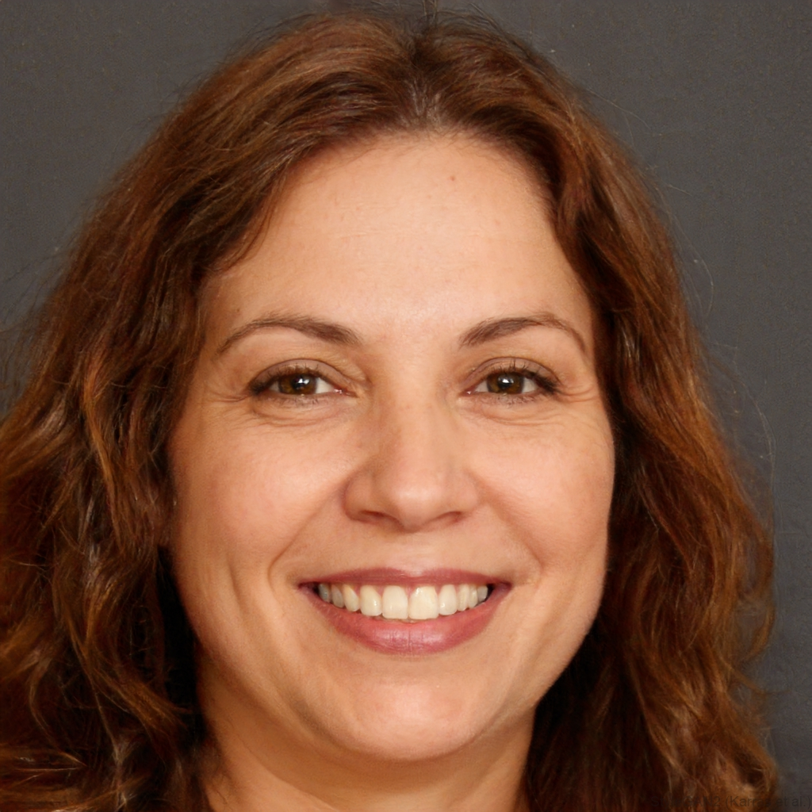

Nivedita Okonkwo
Associate Professor
Department of Computer Science
Halvern University

Nivedita Okonkwo is an Associate Professor of Computer Science at Halvern University, where she leads the Reliable Learning Group. Her research focuses on understanding and mitigating distribution shift in modern machine learning systems, with an emphasis on representation learning and certified robustness. Before joining Halvern in 2020, she completed her Ph.D. at Carnegie Mellon University and a postdoc at the Toyota Technological Institute at Chicago. Her work has been recognized by an NSF CAREER Award (2023) and a Sloan Research Fellowship (2024).
Contact Information
Department of Computer Science
Halvern University
500 North University Avenue
Ramsey Hall, Room 4208
Halvern, OH 44820
USA
Phone: (419) 555-0142
Lab: (419) 555-0178
Fax: (419) 555-0199
Email: nokonkwo (at) halvern (dot) edu
Also: niv (at) halvern (dot) edu
Office hours: Tuesdays 2:00–4:00 PM, or by appointment
Research Interests
- machine learning
- distribution shift
- trustworthy ML
- representation learning
Publications
- Okonkwo, N., Park, J., Haddad, L., Chen, M. "Certified Robustness via Smoothed Representations under Covariate Shift," NeurIPS, 2024.
- Park, J., Okonkwo, N. "Disentangling Spurious and Causal Features via Representation Audits," ICML, 2024.
- Okonkwo, N., Iwu, R., Vogel, S. "ATLAS: A Benchmark for Subpopulation Shift in Medical Imaging," NeurIPS Datasets and Benchmarks, 2023.
- Haddad, L., Okonkwo, N. "On the Calibration of Fine-Tuned Vision Transformers," ICLR, 2023.
- Okonkwo, N., Morales, T. "Smoothness Is Not Enough: Rethinking Lipschitz Constraints in Robust Learning," ICML, 2022. (Outstanding Paper Award).
- Chen, M., Okonkwo, N., Brandt, E. "Failure Modes of Empirical Risk Minimization under Group Shift," AISTATS, 2022.
- Okonkwo, N., Brandt, E. "Representation Stability as a Proxy for Generalization," NeurIPS, 2021.
- Okonkwo, N., Sato, K., Brandt, E. "A Geometric View of Domain Generalization," ICML, 2020.
- Okonkwo, N., Lindqvist, H. "Randomized Smoothing with Learned Noise Distributions," NeurIPS, 2019.
- Okonkwo, N. "Learning Representations Robust to Covariate Shift," Ph.D. Thesis, Carnegie Mellon University, 2018.
Teaching
Fall 2025:
CS 5891 — Trustworthy Machine Learning
Ramsey Hall 1301, MW 10:00–11:20 AM, graduate
Spring 2025:
CS 3891 — Introduction to Machine Learning
Baxter Hall 100, TR 1:00–2:20 PM, undergraduate
Fall 2024:
CS 5892 — Seminar on Distribution Shift
graduate
Students
Current Ph.D. students:
- Jiho Park, started 2021 (spurious correlations)
- Leila Haddad, started 2022 (calibration under shift)
- Marcus Chen, started 2023 (certified robustness)
- Sofia Vogel, started 2024 (benchmarks for medical ML)
Current Masters students:
Former students:
- Hilde Lindqvist (2024) — Research Scientist, Northwind AI
- Kenji Sato (2023) — Assistant Professor, Pacific State University
I am accepting Ph.D. students for Fall 2026. Prospective students should apply through the Halvern CS graduate program and mention my name in their statement. I cannot respond to individual inquiry emails before applications are reviewed.
Last updated: September 12, 2025.